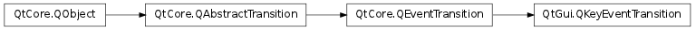

QKeyEventTransition ¶

Note
This class was introduced in Qt 4.6
Synopsis ¶
Functions ¶
- def key ()
- def modifierMask ()
- def setKey (key)
- def setModifierMask (modifiers)
Detailed Description ¶
The PySide.QtGui.QKeyEventTransition class provides a transition for key events.
PySide.QtGui.QKeyEventTransition is part of The State Machine Framework .
See also
QState.addTransition()
- class PySide.QtGui. QKeyEventTransition ( object , type , key [ , sourceState=None ] ) ¶
- class PySide.QtGui. QKeyEventTransition ( [ sourceState=None ] )
-
Parameters: - sourceState – PySide.QtCore.QState
- key – PySide.QtCore.int
- type – PySide.QtCore.QEvent.Type
- object – PySide.QtCore.QObject
Constructs a new key event transition with the given sourceState .
- PySide.QtGui.QKeyEventTransition. key ( ) ¶
-
Return type: PySide.QtCore.int This property holds the key that this key event transition is associated with.
- PySide.QtGui.QKeyEventTransition. modifierMask ( ) ¶
-
Return type: PySide.QtCore.Qt.KeyboardModifiers This property holds the keyboard modifier mask that this key event transition checks for.
- PySide.QtGui.QKeyEventTransition. setKey ( key ) ¶
-
Parameters: key – PySide.QtCore.int This property holds the key that this key event transition is associated with.
- PySide.QtGui.QKeyEventTransition. setModifierMask ( modifiers ) ¶
-
Parameters: modifiers – PySide.QtCore.Qt.KeyboardModifiers This property holds the keyboard modifier mask that this key event transition checks for.